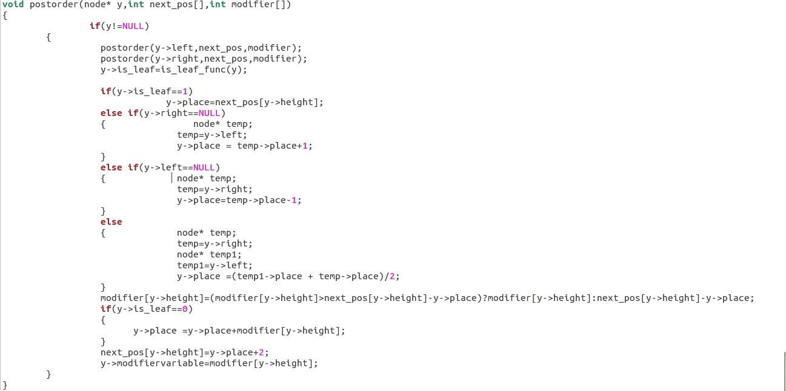
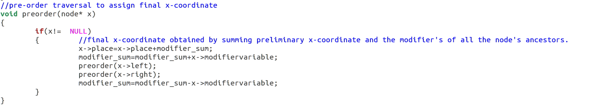
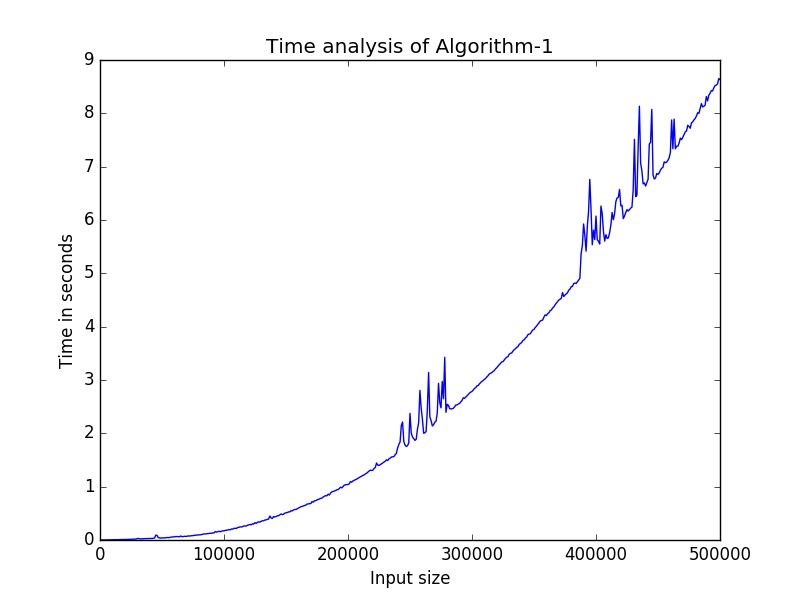
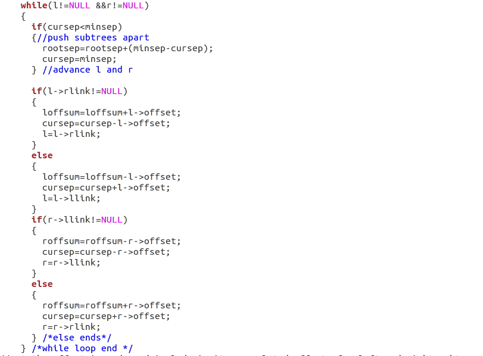
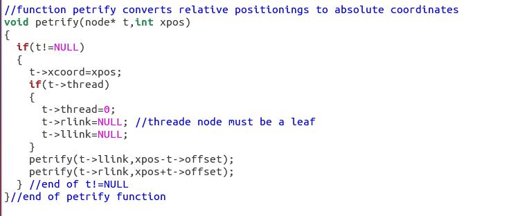
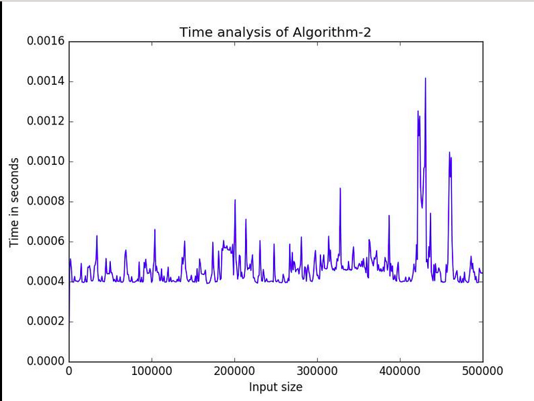

Analysis of both the algorithms and comparison of their performances in terms of efficiency.
Paper-1
Tidy Drawings of Trees
CHARLES WETHERELL and ALFRED SHANNON
The algorithm runs in linear time, taking several walks over the tree structure.
Fig. 1. Code snippet of Algorithm WS
Algorithm WS sets values of provisional xcoordinate and modifier using the above code and it is achieved by using postorder traversal which takes O(n) time where n denotes number of nodes.
Fig. 2. Code snippet of Algorithm WS to assign final xcoordinate
Algorithm WS sets values of final xcoordinate using the above code and it is achieved by using preorder traversal which takes O(n) time where n denotes number of nodes.
To draw circles (denoting the vertex) and lines (denoting the edges) preorder traversal is used which takes O(n) time and to draw lines and circles,midpoint algorithm and Bresenham's line drawing algorithm is used respectively,which takes constant time O(1).
To assign ycoordinate to each node, height function is defined which takes O(log(n)) time in average case and O(n) in worst case.
To insert nodes in binary tree insert function is defined which takes O(log(n)) time in average case and O(n) in worst case.
So, time complexity comes out to be O(n^2) in worst case and O(nlog(n)) in average case.
Fig. 3. Graph showing time taken by Algorithm WS in seconds on y-axis vs input size (number of nodes) using library matplotlib of python.
Paper-2
Tidier Drawings of Trees
EDWARD M.REINGOLD and JOHN S. TILFORD
The algorithm does not appear to be cost effective because it must examine the contour of the subtrees of every node in the tree. However, the requirement that scanning must proceed only to the depth of the shorter subtree of each node makes the running time linear in the number of nodes in the tree and hence comparable to that of Algorithm WS.
Fig. 4. Code snippet of Algorithm TR to assign relative xcoordinate
The time required by Algorithm TR is completely determined by the while loop because SETUP is executed exactly once per node of the tree. The worst case is a complete binary tree for which the loop is executed about n(T) - lg n(T) times, where n(T) denotes the number of nodes binary tree at node T contains; its height h(T) is the number of nodes on the longest path from the root to a leaf.
Fig. 5. Code snippet of Algorithm TR to assign absolute xcoordinate
Algorithm TR sets values of final xcoordinate using the above code and it is achieved by using preorder traversal which takes O(n) time where n denotes number of nodes.
To draw circles (denoting the vertex) and lines (denoting the edges) preorder traversal is used which takes O(n) time and to draw lines and circles,midpoint algorithm and Bresenham's line drawing algorithm is used respectively,which takes constant time O(1).
To assign ycoordinate to each node, height function is defined which takes O(log(n)) time in average case and O(n) in worst case.
To insert nodes in binary tree insert function is defined which takes O(log(n)) time in average case and O(n) in worst case.
Fig. 6. Graph showing time taken by Algorithm TR in seconds on y-axis vs input size (number of nodes) using library matplotlib of python.
It is imperative to note, that the time graphs drawn above are the 'actual' practically realised times. The values were all measured under similar cirucumstances for a given Algorithm. Hence, even if the initial parameters may vary with some discrepancies, the overall shape and nature of the curve persists. The graphical realisation was done, using file I/O of C, to output the times to a local file. The FILE I/O's overhead wasn't considered while making the time computations. And the subsequent output of the file, is taken as input by a python script, which uses the matplotlib library, to graph the curves. The inputs were randomly generated from the C standard library's functions, and were taken to be less than 1000 in an effort to curb the variance of their output.